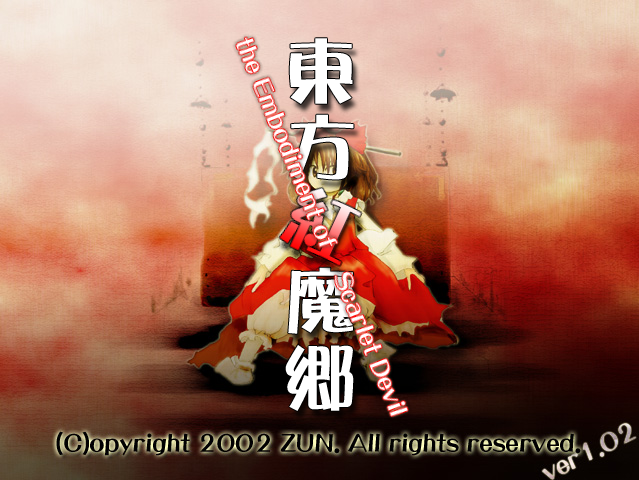
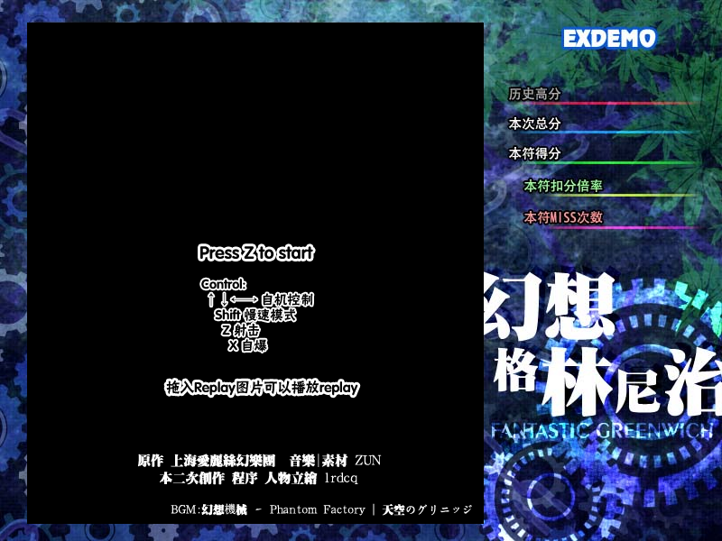

对论坛里几个已发布的网页STG的收集整理
作者：OFz，发表于 2014-7-11 18:01:34
嗯，下面是链接：
http://oxyflour.duapp.com/th06
低配置电脑请尝试下面这个（禁用了背景）
http://oxyflour.duapp.com/th06/?nobg
请注意：
1. 只测试了最新的 Chrome (35)，IE (11) 和 Firefox (30)，其他浏览器不能玩请在下面留言
2. 选关请进 Practice Start。选任意难度都是 Lunatic，自机只有灵梦A可用
3. 所有弹幕的参数（位置，弹速，频率等）基本都是估 (nao) 计 (bu) 的，跟原作相比难度可能不 (hen) 相 (keng) 同 (die)
4. 因为姆Q的书都是带魔法的，所以 IE 看不到是正常的 （参看 issue 6，五六面背景不对也是由于相同原因。IE同学你的修行还不够呢！）
作者：lrdcq，发表于 2014-6-7 16:45:55
这是HTML5在线弹幕游戏引擎这个天坑的新新的测试STG，是一个完整的EX长度和EX节奏的游戏，期中有非常创keng新die的形式的弹幕~~~
这次的地址【http://lrdcq.com/test/webgl/demo5/】，同样对电脑和浏览器性能有一定要求，基本上只有chrome能跑的节奏，FF稍微有点问题的样子。。各种素材又都是直接'借用'ZUN原作真是对不起啦（咦为什么我要说又）
欢迎各位制作各种游戏，将来将会建立全论坛排名系统（确信）
源地址：地址
Github页面：Github
地址：（还是过去玩吧）链接
地址：（就不嵌入了）源地址
地址：（就不嵌入了）源地址
地址：（就不嵌入了）源地址
地址：（就不嵌入了）源地址
地址：（就不嵌入了）源地址
原本巨硬也做了的，可是居然删了
地址：（还是过去玩吧）链接